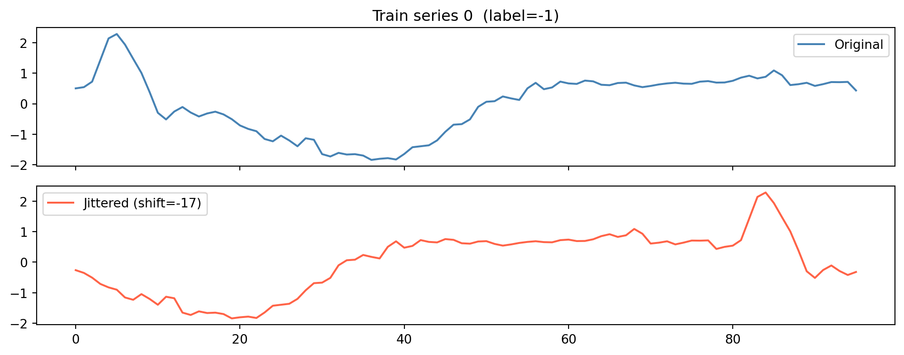

import pandas as pd
import numpy as np
import matplotlib.pyplot as plt
import joblib
from pathlib import Path
from dtaidistance import dtw
from sklearn.neighbors import KNeighborsClassifier
from sklearn.model_selection import train_test_split
from sklearn.impute import SimpleImputer
from sklearn.linear_model import LogisticRegression
from sklearn.pipeline import Pipeline
from sklearn.preprocessing import StandardScaler
from sklearn.svm import SVC
from sklearn.tree import DecisionTreeClassifier
from sklearn.ensemble import (
RandomForestClassifier,
RandomForestRegressor
)
from sklearn.preprocessing import StandardScaler
from sklearn.metrics import (
confusion_matrix,
ConfusionMatrixDisplay,
accuracy_score,
precision_score,
recall_score,
f1_score,
roc_auc_score,
classification_report,
balanced_accuracy_score,
)
import warnings
warnings.filterwarnings('ignore')ADSP 31006 ON02 Final Project - Group 3
Course: ADSP 31006 ON02 Time Series Analysis and Forecasting
Students: Maja Ivanovic, Victoria Li, Kathleen Nie, Mpiira Tabuti
0.0.1 0. Dependencies, data import, and helper functions
DATA_DIR = Path("../ECG200")
MODELS_DIR = Path("../models")
RANDOM_STATE = 42def dtw_distance(u, v):
return dtw.distance(u, v)1 A. Normal un-transformed data
1.0.1 A.1. Pre-processing
# --- Load TRAIN ---
df_train = pd.read_csv(
DATA_DIR / "ECG200_TRAIN.txt",
sep='\s+',
header=None
)
# --- Load TEST ---
df_test = pd.read_csv(
DATA_DIR / "ECG200_TEST.txt",
sep='\s+',
header=None
)
# --- Split into features and labels ---
y_train = df_train.iloc[:, 0].values
X_train = df_train.iloc[:, 1:].values
y_test = df_test.iloc[:, 0].values
X_test = df_test.iloc[:, 1:].values1.0.2 A.3. Load and apply models
model_files = {
"knn_dtw_k5": MODELS_DIR / "knn_dtw_k5.pkl",
"knn_euclidean_k5": MODELS_DIR / "knn_euclidean_k5.pkl",
"logreg": MODELS_DIR / "logreg.pkl",
"svm_rbf": MODELS_DIR / "svm_rbf.pkl",
}
rows = []
for name, path in model_files.items():
model = joblib.load(path)
y_pred = model.predict(X_test)
if hasattr(model, "predict_proba"):
y_prob = model.predict_proba(X_test)[:, 1]
else:
y_prob = None
tn, fp, fn, tp = confusion_matrix(y_test, y_pred, labels=[-1, 1]).ravel()
accuracy = accuracy_score(y_test, y_pred)
precision = precision_score(y_test, y_pred, pos_label=1)
recall = recall_score(y_test, y_pred, pos_label=1)
specificity = tn / (tn + fp)
f1 = f1_score(y_test, y_pred, pos_label=1)
bal_acc = balanced_accuracy_score(y_test, y_pred)
auc = roc_auc_score(y_test, y_prob) if y_prob is not None else np.nan
rows.append({
"Model": name,
"Accuracy": accuracy,
"Precision": precision,
"Recall (Sensitivity)": recall,
"Specificity": specificity,
"F1": f1,
"Balanced_Accuracy": bal_acc,
"AUC": auc,
})
results_df = pd.DataFrame(rows).sort_values(by="F1", ascending=False)
print("\n=== Model Evaluation Summary (Test Set) ===")
print(results_df.to_string(index=False))
=== Model Evaluation Summary (Test Set) ===
Model Accuracy Precision Recall (Sensitivity) Specificity F1 Balanced_Accuracy AUC
knn_euclidean_k5 0.90 0.897059 0.953125 0.805556 0.924242 0.879340 0.953776
svm_rbf 0.87 0.880597 0.921875 0.777778 0.900763 0.849826 0.931424
logreg 0.84 0.900000 0.843750 0.833333 0.870968 0.838542 0.910156
knn_dtw_k5 0.79 0.802817 0.890625 0.611111 0.844444 0.750868 0.9166672 B. Phase shifted data
2.0.1 B.1. Pre-processing
RNG = np.random.default_rng(seed=RANDOM_STATE)
def jitter_series(X, max_shift=20):
"""Return a copy of X where every row is circularly shifted by a
random integer in [-max_shift, max_shift]."""
shifts = RNG.integers(-max_shift, max_shift + 1, size=len(X))
return np.array([np.roll(row, s) for row, s in zip(X, shifts)]), shifts
X_train_jit, shifts_train = jitter_series(X_train)
X_test_jit, shifts_test = jitter_series(X_test)
print(f"Train jitter — min: {shifts_train.min():+d} max: {shifts_train.max():+d} "
f"mean: {shifts_train.mean():+.2f}")
print(f"Test jitter — min: {shifts_test.min():+d} max: {shifts_test.max():+d} "
f"mean: {shifts_test.mean():+.2f}")
# --- Sanity check: one original time series vs. its jittered version ---
fig, axes = plt.subplots(2, 1, figsize=(10, 4), sharex=True)
idx = 0
axes[0].plot(X_train[idx], label="Original", color="steelblue")
axes[0].set_title(f"Train series {idx} (label={y_train[idx]:.0f})")
axes[0].legend()
axes[1].plot(X_train_jit[idx], label=f"Jittered (shift={shifts_train[idx]:+d})", color="tomato")
axes[1].legend()
plt.tight_layout()
plt.show()Train jitter — min: -19 max: +20 mean: +1.07
Test jitter — min: -20 max: +20 mean: -0.37
2.0.2 B.2. Build and save classification models
#Continue to use models from A.2.2.0.3 B.3. Load and apply models
model_files = {
"knn_dtw_k5": MODELS_DIR / "knn_dtw_k5.pkl",
"knn_euclidean_k5": MODELS_DIR / "knn_euclidean_k5.pkl",
"logreg": MODELS_DIR / "logreg.pkl",
"svm_rbf": MODELS_DIR / "svm_rbf.pkl",
}
rows_jit = []
for name, path in model_files.items():
model = joblib.load(path)
y_pred = model.predict(X_test_jit)
if hasattr(model, "predict_proba"):
y_prob = model.predict_proba(X_test_jit)[:, 1]
else:
y_prob = None
tn, fp, fn, tp = confusion_matrix(y_test, y_pred, labels=[-1, 1]).ravel()
rows_jit.append({
"Model": name,
"Accuracy": accuracy_score(y_test, y_pred),
"Precision": precision_score(y_test, y_pred, pos_label=1),
"Recall (Sensitivity)": recall_score(y_test, y_pred, pos_label=1),
"Specificity": tn / (tn + fp),
"F1": f1_score(y_test, y_pred, pos_label=1),
"Balanced_Accuracy": balanced_accuracy_score(y_test, y_pred),
"AUC": roc_auc_score(y_test, y_prob) if y_prob is not None else np.nan,
})
results_jit_df = pd.DataFrame(rows_jit).sort_values("F1", ascending=False)
print("\n=== Jittered Test Set (trained on clean) ===")
print(results_jit_df.to_string(index=False))
# --- Degradation vs. original clean results ---
degradation = (
results_df[["Model", "F1"]]
.rename(columns={"F1": "F1_clean"})
.merge(results_jit_df[["Model", "F1"]], on="Model")
.assign(F1_drop=lambda d: d["F1_clean"] - d["F1"])
.sort_values("F1_drop", ascending=False)
)
print("\n=== F1 degradation from jitter ===")
print(degradation.to_string(index=False))
=== Jittered Test Set (trained on clean) ===
Model Accuracy Precision Recall (Sensitivity) Specificity F1 Balanced_Accuracy AUC
knn_dtw_k5 0.70 0.729730 0.843750 0.444444 0.782609 0.644097 0.720703
logreg 0.60 0.785714 0.515625 0.750000 0.622642 0.632812 0.638889
knn_euclidean_k5 0.48 0.620000 0.484375 0.472222 0.543860 0.478299 0.482205
svm_rbf 0.56 0.833333 0.390625 0.861111 0.531915 0.625868 0.660590
=== F1 degradation from jitter ===
Model F1_clean F1 F1_drop
knn_euclidean_k5 0.924242 0.543860 0.380383
svm_rbf 0.900763 0.531915 0.368848
logreg 0.870968 0.622642 0.248326
knn_dtw_k5 0.844444 0.782609 0.061836